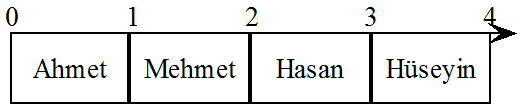
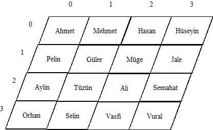
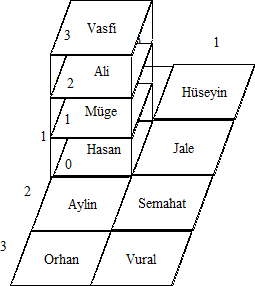

JavaScript Temelleri
Bölüm 8
Array (Dizi) Nesne Sınıfı
Bölüm 8 Sayfa 6
8.5.2 - for .. in Döngülerinin Dizi Elemanlarına Erişim için Kullanılması
Nesne sınıf örneklerinin özelliklerine erişim için, for..in döngüleri çok kullanışlıdır. Bu döngülerin yapısı, Bölüm 2.13.5 de açıklandığı gibi,
for(anahtar in nesneÖrneği) { Bildirimler }
şeklindedir. for..in döngüleri, nesne örneklerinin tüm sayılabilir (enumearable) özelliklerini yani, öntanımlı olmayan tüm özelliklerini tararlar. Nesne örnekleri için bu istenen bir şeydir, çünkü tüm kullanıcı tipli nesne sınıf örneklerinin özellikleri, sayılabilir niteliktedir. for..in döngüleri erişecekleri nesne özelliklerine, belirli bir sıra gözetmeden erişebilirler. Nesne özellikleri için bu da fazla bir sakınca sayılmaz, çünkü özellik adları sözeldir ve hangi sıra ile görüntüleneceği fazla farketmez. Aslında hemen her defasında görüntülenen özellikler, tanım sırasına göredir.
Dizilerin elemanlarına, for..in döngüleri yardımı ile erişilmesi kullanıcılara çekici gelebilir. Bu döngülerin kullanılması çok kolaydır ve kullanıcının kendisinin seçeceği bir anahtar sözcük yardımı ile, döngünün başlangıç ve sonucunu gözetmeden, işlemin yazılıma bırakılabileceği düşünülür. Aslında bu kısmen doğrudur.
Diziler özel bir nesne sınfıdır. ve Bölüm 8.1 ve 8.2 de, dizilerin eleman özelliklerinin adlarının bir tamsayı olduğu, bu tamsayılara eleman indisi adı verildiğini ve başka nesne sınıflarının aksine, dizi sınıfının örneklerinin eleman özelliklerine nokta notasyonu ile erişlemediği açıklanmıştı. Dizilerin eleman indisleri sıfırdan başlayarak birbirini takip ederek artan bir şekilde verilmişlerse bu dizi, bitişik sürekli bir dizi olur. Fakat, her dizinin, bitişik sürekli bir dizi olarak tanımlanması zorunluğu yoktur.
Dizilerin, eleman özelliklerinden başka, kullanıcılar tarafından tanımlanmış, özel isimli statik özellikler olarak adlandırılan, özellileri de olabilir. Eleman özelliklerinin aksine, bunlara nokta notasyonu ile erişilebilir ve bunlar da for..in döngüleri ile taranan özellikler arasındadır ve bu istenmez. Dizilerde sadece eleman özelliklerinin taranması istenir.
Dizilerde statik özelliklerin for..in döngüleri ile taranmasının önlenmes için, statik özelliklerin isimlerinin sayısal olmamasıından yararlanılır. Statik özellikler, sayısal veya sayısala çevrilebilir karakterde değildir ve aşağıdaki gibi bir filtreleme ile, eleman olmayan özelliklerin filtrelenmesi sağlanabilir :
... for(anahtar in a) { ... if (isNaN(anahtar){ continue } ... } ...
Filtrelenmiş for..in döngüleri ile, statik özellikleri olan tüm dizilerde görüntülenme dışında tüm işlemler güvenle yapılabilir.
Filtrelenmiş for..in döngüleri ile, tüm bitişik-sürekli dizilerin görüntülenmesi sorunsuz olarak gerçekleştirilebilir. Bitişik-sürekli olmayan diziler ise önce uygun bir sıralama yöntemi ile sıralandıktan sonra, filtrelenmiş for..in döngüleri ile görüntülenebilirler. Doğal olarak, bu işlemler yazılım yükünü azaltacak yerde, arttırılabilir. Bu yüzden belki de tam ticari uygulamalarda, dizilerin görüntülenmesi için, for..in döngülerinden uzak durmak gerekir. Fakat, gerekli önlemler alındığında, bunun bir sakıncası olmayabilir. Özellikle, program geliştirme aşamasında ve görüntüleme dışı çalışmalarında, for..in döngülerinin kolaylığından yararlanmak gerekir.
Burada, kullanıcılara bir uyarının tekrarlanması gerekir. Normal olarak diziler, statik özellikler eklenmeden, bitişik-sürekli ve homojen (eleman değerlerinin veri tipi hep aynı) olacak şekilde oluşturulur. Bunun dışına çıkıldığında, erişim otomatizasyonu gibi konularda sorunlar çıkar. Kullanıcıların bu konulara dikkat etmesinde yarar bulunmaktadır.
8.5.3 - Çok Boyutlu Diziler
Tek bir eksen üzerinde yerleşmiş bilgilere skaler adı verilir. İtalyada Milano şehrinde La Scala operasının adı da aynı kökenden gelmektedir. Ama, belki de bu sözcüğün en yakın aynı kökenden geleni, hergün kullandığımız iskele sözcüğüdür. JavaScript programlama dilinde, koordinat eksenleri, sol üst köşeden başlar. Skaler büyüklüklerinin koordinat ekseni üzerindeki yerleşim yerini tek bir absis değeri belirler.

Şekil 8.5.2-1 - Tek Boyutlu Dizinin Geometik Yerleşimi
Yukarıdaki yerleşim, dizi = [ 'Ahmet', 'Mehmet', 'Hasan', 'Hüseyin']; şeklinde bir diziye aittir. Bu dizinin ilk elemanı, dizi[0] = 'Ahmet' elemanıdır ve diğerleri de sırası ile bunu izlemektedir. Bu dizi bitişik-sürekli ve homojen bir dizidir.
Bazı durumlarda, elemanlar sadece bir doğrultuda değil, iki doğrultuda yayılım gösterirler, Bu durumda, bilginin yerinin belirlenmesi için iki koordinata gereksinme duyulur. Bunlardan birisi, yatay eksen koordinatı yani absis, diğeri de düşey eksen koordinatı yani ordinattır. İki boyutlu yerleşimlere Matris adı verilir. Matrisler, Vektör olarak adlandırılan çok boyutlu büyüklüklerin, en küçük boyutlu temsilcisidir. Matrisler bir yüzey boyunca yayılım gösterirler.

Şekil 8.5.2-2 - İki Boyutlu Dizinin Geometik Yerleşimi
JavaScript programlama dili, çok boyutlu dizileri kusursuz bir şekilde destekler. Çok boyutlu dizişer, doğrudan öngörülen boyutla açılamaz, Tüm JavaScript dizileri prensip olarak tek boyutludur. Çok boyutlu olan elemanlardır. Önce boş bir matris dizisi açılır:
matris= [];
Bundan sonra iki alternatif olabilir. İstenirse, Her biri dört eleman içeren üç tane eleman, açılmış boş diziye eklenebilir :
matris= [[ 'Ahmet', 'Pelin', 'Aylin', 'Orhan'], [ 'Mehmet', 'Güler', 'Tüzün', 'Selin'], [...], [...]];
Veya önce tek boyutlu diziler değişkenlere atanr,
dizi1= [ 'Ahmet', 'Pelin', 'Aylin', 'Orhan']; dizi2= [ 'Mehmet', 'Güler', 'Tüzün', 'Selin']; dizi3= [ 'Hasan', 'Müge', 'Ali', 'Vasfi']; dizi4= [ 'Hüseyin', 'Jale', 'Semahat', 'Vural'];
Sonra, bu diziler, matris dizisine eleman olarak atanır:
matris= [dizi1, dizi2, dizi3, dizi4];
Çok boyutlu dizilerde, elemanların absis değerleri, matris dizisinin eleman indisleri, ordinat değerleri ise, iç dizilerin element indisleridir. Bu şekilde, matris[1][1] elemanının değeri 'Güler' olacaktır.
Üç boyutlu dizilere uzay vektörü (spatial vector), adı verilir. Uç boyutlu uzay, insan beynin algılayabildiği en son boyuttur. Üç boyutlu vektörler aynı iki boyutlu dizilerin tanımlandığı gibi tanımlanabilir. Örnek olarak, Aynı yukarıda olduğu gibi önce diziler tanımlanır,
dizi1= [ 'Hasan', 'Müge', 'Ali', 'Vasfi']; dizi2= [ 'Hüseyin', 'Jale', 'Semahat', 'Vural']; dizi0= [ 'Günsel', dizi1, 'Semahat', 'Vural'];
sonra hepsi bir vektör dizisine yerleştirilir:
vektör= [dizi0, dizi2];
Üç boyutlu bir vektör, uzayda bir hacım içinde yayılım gösterir :

Şekil 8.5.2-3 - Üç Boyutlu Dizinin Geometik Yerleşimi
vektör dizisinde sadece ilk elemanın ikinci elemanı üç boyutludur ve vektör[0][1][1] elemanın değeri 'Müge' olacaktır.
Bilgisayar programlanması için, çok boyutlu dizilerin geometrik anlamının önemi yoktur. Dizi elemanlarına içiçe döngülerle ulaşılır ve dizinin boyutu çoğaldıkça, kullanılması gereken, içiçe döngü sayısı artacağından işlem pratik olmaktan çıkar. Çok boyutlu uzayların üç boyutlu olanları daha çok matematik amaçlı kullanılır. Daha fazla boyut kullanımı alışılmış değildir.
Günümüzde nesne teknolojisinin gelişmesi ile, sosyal çalışmalarda çok boyutlu dizilerin kullanılması gereği ortadan kalkmıştır. Çok boyutlu uzay çalışmalarının sadece matematik önemi bulunmaktadıır.